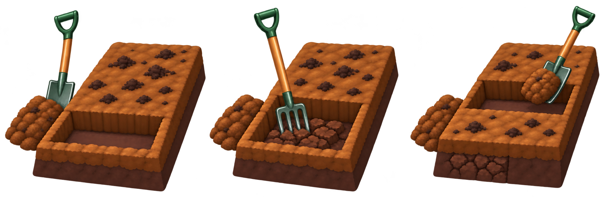

Growing Techniques · Cultivation
Getting started withDigging
Single digging turns the topsoil. Double digging also loosens the layer underneath: a bigger job for a new or compacted bed, done at the start or occasionally, rather than every year.
Single digging: the annual job
On an established dug bed, spread well-rotted compost or manure where needed. Start at one edge and turn the ground over with a spade or fork, working backwards so you don’t tread on what you have loosened. Work to one spade’s depth, bury the compost, break large clods and remove stones and weed roots. There is no need to organise this into trenches.
Double digging: work in trenches
You need: A strong fork, digging spade, rake, barrow and well-rotted compost or manure.

1Open the first trench
Clear weeds and mark out the bed. Spread half your compost over it; keep the rest beside you. Dig across one end, one spade wide and deep. Save this topsoil in a barrow or at the far end for the final trench.
2Loosen underneath
Add a couple of spadefuls of compost to the trench bottom. Fork the lower soil another full fork-depth, mixing it in and removing rubble. Take small bites; use a mattock on hard patches. Loosen the subsoil in place, keeping it beneath the topsoil.
3Move along the bed
Dig the next trench alongside, turning its topsoil into the first and mixing in the surface compost. Break clods and remove weed roots. Now add compost and fork the bottom of this new trench, just as before. Repeat along the bed.
Work when soil crumbles. If it is wet and sticky or frozen, wait. Take small bites and regular breaks.
Finish the bed on the next page.